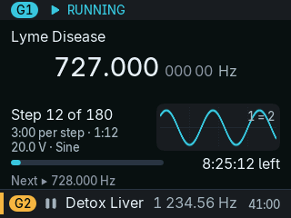

OpenGX Pro beta
More from the screen of your GeneratorX Pro
Free, open firmware. Install it from your browser, go back any time.
- Terrain Protocol built in
- Radionics (Boost) Manifestation built in
- Works with Spooky2
- Your programs stay
GeneratorX Pro

Stop⏻▲G1▼G2StartLoop